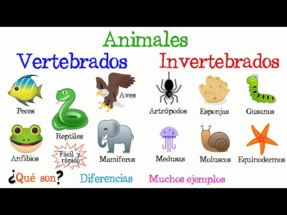
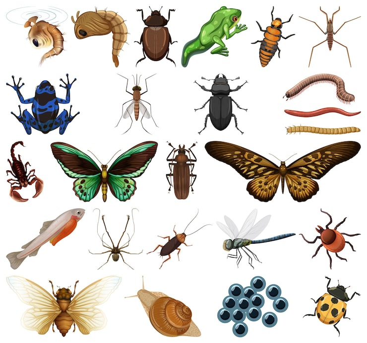

EXPLORA EL REINO ANIMAL - UN MUNDO DE DESCUBRIMIENTO
Descubre la asombrosa diversidad de la vida en nuestro planeta. Explora el mundo de los vertebrados, criaturas con esqueleto que conquistan tierra, mar y aire, y el de los invertebrados, los verdaderos maestros de la supervivencia que dominan cada rincón de la Tierra.
El reino de los animales
El reino animal abarca una asombrosa diversidad de seres vivos que comparten la capacidad de moverse, nutrirse de otros organismos y adaptarse a casi cualquier entorno del planeta. Para comprender este fascinante mundo, la ciencia lo divide principalmente en dos grandes grupos: los vertebrados, que poseen un esqueleto interno y una columna vertebral que les brinda soporte, y los invertebrados, que carecen de esta estructura ósea y representan la gran mayoría de las especies en la Tierra.

Animales Vertebrados
Criaturas con esqueleto interno y columna vertebral que habitan en el agua, tierra y aire.
.jpeg)
Ver Vertebrados
Animales Invertebrados
Los verdaderos maestros de la supervivencia que carecen de esqueleto y dominan el planeta.

Ver Invertebrados